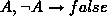
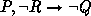
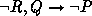
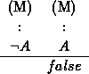
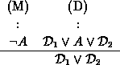
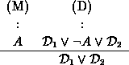

を導入。 といったルールに関して、それと論理的に等
価である
といったルールに関して、それと論理的に等
価である
や
といった 負の制約伝搬ルールが記述可能。マ シ ン：PIM/UNIXマシン 環 境：PIMOS/UNIX, KLIC 言 語：Prolog/KL1 ソース量：0.2 MB 文 書：マニュアル (日本語・英語)

を導入。 といったルールに関して、それと論理的に等
価である
や
といった 負の制約伝搬ルールが記述可能。
CMGTP はこのような欠点を補うため、MGTP に負アトムを導入し、また、以下 に示すような unit refutation、unit simplificationのメカニズムを導入す ることによって、負の情報による制約伝搬を可能にした。ここで、$M, D$ は それぞれモデル候補集合、モデル拡張候補集合を表す。



CMGTP では、有限領域の制約充足問題の制約式をダイレクトに記述できるとい う意味で、制約記述のためのメタ言語として考えることができる。
例題として扱った有限代数分野の準群問題に関しては、非常に効率良く解が求 められることがわかっている。